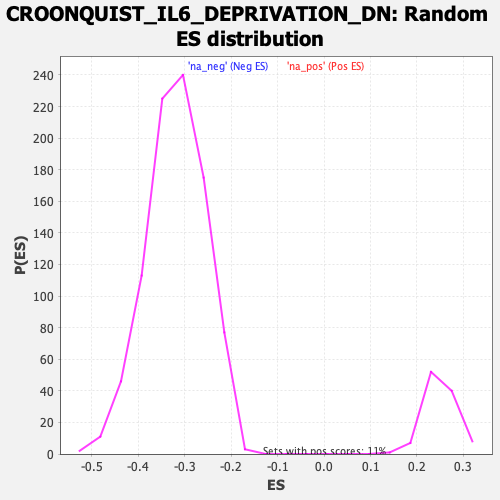

| | | Dataset | DE_genes2 |
| Phenotype | NoPhenotypeAvailable |
| Upregulated in class | na_neg |
| GeneSet | CROONQUIST_IL6_DEPRIVATION_DN |
| Enrichment Score (ES) | -0.7701719 |
| Normalized Enrichment Score (NES) | -2.413937 |
| Nominal p-value | 0.0 |
| FDR q-value | 0.0 |
| FWER p-Value | 0.0 |
Table: GSEA Results Summary
 Fig 1: Enrichment plot: CROONQUIST_IL6_DEPRIVATION_DN
Fig 1: Enrichment plot: CROONQUIST_IL6_DEPRIVATION_DN
Profile of the Running ES Score & Positions of GeneSet Members on the Rank Ordered List
| PROBE | GENE SYMBOL | GENE_TITLE | RANK IN GENE LIST | RANK METRIC SCORE | RUNNING ES | CORE ENRICHMENT | | 1 | SBNO2 | | | 535 | 3.619 | -0.0237 | No |
| 2 | PTP4A3 | | | 557 | 3.549 | -0.0163 | No |
| 3 | GPX4 | | | 764 | 3.091 | -0.0212 | No |
| 4 | ABHD5 | | | 1931 | 1.807 | -0.0877 | No |
| 5 | MYRF | | | 6727 | 0.197 | -0.3789 | No |
| 6 | STMN1 | | | 7057 | 0.145 | -0.3985 | No |
| 7 | GALE | | | 7096 | 0.135 | -0.4005 | No |
| 8 | APOBEC3B | | | 7101 | 0.134 | -0.4004 | No |
| 9 | GALK1 | | | 9100 | -0.214 | -0.5214 | No |
| 10 | ITM2A | | | 9840 | -0.412 | -0.5654 | No |
| 11 | FRZB | | | 10479 | -0.613 | -0.6027 | No |
| 12 | AASS | | | 10956 | -0.785 | -0.6297 | No |
| 13 | RRP12 | | | 11000 | -0.801 | -0.6304 | No |
| 14 | SEPHS1 | | | 11002 | -0.803 | -0.6284 | No |
| 15 | LIG1 | | | 12096 | -1.272 | -0.6918 | No |
| 16 | HMGA1 | | | 12102 | -1.273 | -0.6890 | No |
| 17 | STIL | | | 12207 | -1.330 | -0.6921 | No |
| 18 | DTYMK | | | 12442 | -1.447 | -0.7028 | No |
| 19 | KIF22 | | | 13043 | -1.792 | -0.7349 | No |
| 20 | POLD1 | | | 13115 | -1.833 | -0.7347 | No |
| 21 | WEE1 | | | 13432 | -2.049 | -0.7489 | No |
| 22 | MCM3 | | | 13783 | -2.315 | -0.7645 | Yes |
| 23 | CKS1B | | | 13865 | -2.382 | -0.7636 | Yes |
| 24 | GMPS | | | 13895 | -2.413 | -0.7594 | Yes |
| 25 | MCM7 | | | 13952 | -2.457 | -0.7568 | Yes |
| 26 | DHFR | | | 13968 | -2.471 | -0.7517 | Yes |
| 27 | SNRPA1 | | | 14016 | -2.506 | -0.7484 | Yes |
| 28 | TRAIP | | | 14068 | -2.569 | -0.7452 | Yes |
| 29 | CCNF | | | 14092 | -2.590 | -0.7403 | Yes |
| 30 | TYMS | | | 14161 | -2.652 | -0.7379 | Yes |
| 31 | KPNA2 | | | 14317 | -2.796 | -0.7405 | Yes |
| 32 | DUT | | | 14433 | -2.919 | -0.7403 | Yes |
| 33 | PTTG1 | | | 14464 | -2.952 | -0.7349 | Yes |
| 34 | CHAF1A | | | 14579 | -3.085 | -0.7343 | Yes |
| 35 | PCNA | | | 14896 | -3.501 | -0.7449 | Yes |
| 36 | MCM4 | | | 14906 | -3.510 | -0.7369 | Yes |
| 37 | MCM2 | | | 15006 | -3.658 | -0.7340 | Yes |
| 38 | PLK4 | | | 15029 | -3.687 | -0.7263 | Yes |
| 39 | CDC25A | | | 15082 | -3.764 | -0.7202 | Yes |
| 40 | CKS2 | | | 15086 | -3.767 | -0.7112 | Yes |
| 41 | ZWINT | | | 15107 | -3.798 | -0.7031 | Yes |
| 42 | SPAG5 | | | 15339 | -4.181 | -0.7069 | Yes |
| 43 | TK1 | | | 15344 | -4.187 | -0.6969 | Yes |
| 44 | GGH | | | 15362 | -4.223 | -0.6875 | Yes |
| 45 | CDC20 | | | 15404 | -4.309 | -0.6795 | Yes |
| 46 | POLE2 | | | 15406 | -4.310 | -0.6690 | Yes |
| 47 | MYBL2 | | | 15492 | -4.462 | -0.6632 | Yes |
| 48 | TRIP13 | | | 15527 | -4.544 | -0.6542 | Yes |
| 49 | GINS1 | | | 15564 | -4.619 | -0.6450 | Yes |
| 50 | FANCI | | | 15588 | -4.678 | -0.6350 | Yes |
| 51 | AURKA | | | 15607 | -4.737 | -0.6245 | Yes |
| 52 | PLK1 | | | 15623 | -4.763 | -0.6137 | Yes |
| 53 | CCNB1 | | | 15643 | -4.796 | -0.6031 | Yes |
| 54 | KIFC1 | | | 15645 | -4.799 | -0.5914 | Yes |
| 55 | OIP5 | | | 15659 | -4.836 | -0.5804 | Yes |
| 56 | KNTC1 | | | 15665 | -4.846 | -0.5688 | Yes |
| 57 | RRM2 | | | 15702 | -4.911 | -0.5590 | Yes |
| 58 | UBE2C | | | 15704 | -4.913 | -0.5470 | Yes |
| 59 | FOXM1 | | | 15710 | -4.931 | -0.5352 | Yes |
| 60 | NASP | | | 15792 | -5.106 | -0.5276 | Yes |
| 61 | CDK1 | | | 15810 | -5.156 | -0.5160 | Yes |
| 62 | CCNB2 | | | 15832 | -5.225 | -0.5045 | Yes |
| 63 | NCAPH | | | 15843 | -5.247 | -0.4923 | Yes |
| 64 | TPX2 | | | 15859 | -5.288 | -0.4802 | Yes |
| 65 | CHEK1 | | | 15965 | -5.552 | -0.4730 | Yes |
| 66 | RFC3 | | | 16020 | -5.728 | -0.4622 | Yes |
| 67 | SPP1 | | | 16027 | -5.744 | -0.4485 | Yes |
| 68 | MAD2L1 | | | 16043 | -5.805 | -0.4352 | Yes |
| 69 | KIF2C | | | 16061 | -5.848 | -0.4219 | Yes |
| 70 | CCNE2 | | | 16115 | -5.986 | -0.4105 | Yes |
| 71 | AURKB | | | 16120 | -6.007 | -0.3960 | Yes |
| 72 | SPC25 | | | 16131 | -6.050 | -0.3818 | Yes |
| 73 | BUB1 | | | 16142 | -6.084 | -0.3675 | Yes |
| 74 | CDC45 | | | 16272 | -6.693 | -0.3590 | Yes |
| 75 | BUB1B | | | 16335 | -7.102 | -0.3453 | Yes |
| 76 | CDC6 | | | 16375 | -7.439 | -0.3295 | Yes |
| 77 | CCNA2 | | | 16376 | -7.439 | -0.3113 | Yes |
| 78 | ANP32E | | | 16405 | -7.799 | -0.2939 | Yes |
| 79 | KIF11 | | | 16409 | -7.860 | -0.2748 | Yes |
| 80 | BRCA1 | | | 16413 | -7.892 | -0.2556 | Yes |
| 81 | SMC4 | | | 16421 | -7.981 | -0.2365 | Yes |
| 82 | CENPA | | | 16438 | -8.139 | -0.2175 | Yes |
| 83 | CDKN3 | | | 16463 | -8.532 | -0.1981 | Yes |
| 84 | SMC2 | | | 16464 | -8.568 | -0.1771 | Yes |
| 85 | MKI67 | | | 16483 | -9.193 | -0.1557 | Yes |
| 86 | TOP2A | | | 16497 | -9.873 | -0.1323 | Yes |
| 87 | CENPE | | | 16501 | -10.010 | -0.1079 | Yes |
| 88 | KIF14 | | | 16503 | -10.060 | -0.0834 | Yes |
| 89 | SKP2 | | | 16506 | -10.608 | -0.0575 | Yes |
| 90 | HMGB2 | | | 16525 | -11.801 | -0.0297 | Yes |
| 91 | HMMR | | | 16528 | -12.240 | 0.0002 | Yes |
Table: GSEA details [plain text format]

Fig 2: CROONQUIST_IL6_DEPRIVATION_DN: Random ES distribution
Gene set null distribution of ES for CROONQUIST_IL6_DEPRIVATION_DN